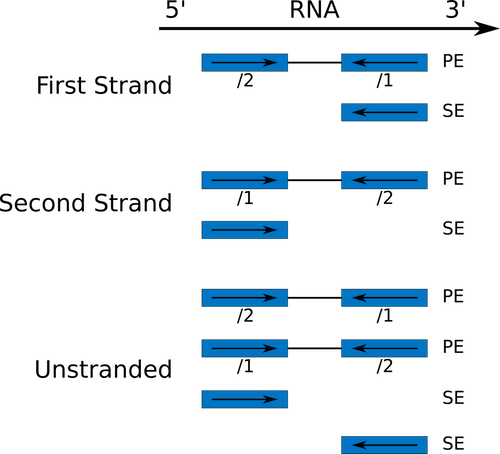

In the study of Brooks et al. 2011, the Pasilla (PS) gene, Drosophila homologue of the Human splicing regulators Nova-1 and Nova-2 Proteins, was depleted in Drosophila melanogaster by RNAi. The authors wanted to identify exons that are regulated by Pasilla gene using RNA sequencing data.
Total RNA was isolated and used for preparing either single-end or paired-end RNA-seq libraries for treated (PS depleted) samples and untreated samples. These libraries were sequenced to obtain a collection of RNA sequencing reads for each sample. The effects of Pasilla gene depletion on splicing events can then be analyzed by comparison of RNA sequencing data of the treated (PS depleted) and the untreated samples.
The genome of Drosophila melanogaster is known and assembled. It can be used as reference genome to ease this analysis. In a reference based RNA-seq data analysis, the reads are aligned (or mapped) against a reference genome, Drosophila melanogaster here, to significantly improve the ability to reconstruct transcripts and then identify differences of expression between several conditions.
Each sample constitutes a separate biological replicate of the corresponding condition (treated or untreated). Moreover, two of the treated and two of the untreated samples are from a paired-end sequencing assay, while the remaining samples are from a single-end sequencing experiment.
We have extracted sequences from the Sequence Read Archive (SRA) files to build FASTQ files.
Hands-on: Data upload
Create a new history for this RNA-seq exercise
Import a FASTQ file pair (e.g.GSM461177_untreat_paired_chr4_R1.fastq and GSM461177_untreat_paired_chr4_R2.fastq)
Option 1: From a shared data library if available (ask your instructor)
Once the data file is in your history, verify that the datatype is fastqsanger, not fastq.
If the datatype is fastq, please change the file type to fastqsanger
Tip: Changing the datatype
Click on the pencil button displayed in your dataset in the history
Choose Datatype on the top
Select fastqsanger
Press Save
Edit the “Database/Build” to select dm3
Rename the datasets according to the samples
Both files contain the reads that belong to chromosome 4 of a paired-end sample. The sequences are raw sequences from the sequencing machine, without any pretreatments. They need to be controlled for their quality.
FastQC : Run FastQC on both FASTQ files to control the quality of the reads
Questions
What is the read length?
Is there anything that you find striking when you compare the two reports?
Click to view answers
The read length is 37 bp
Both reports for GSM461177_untreat_paired_chr4_R1 and for GSM461177_untreat_paired_chr4_R2 are quite ok. For GSM461177_untreat_paired_chr4_R1, there are several warnings and an issue with the Kmer content. For GSM461177_untreat_paired_chr4_R2, the quality in the 2nd tile is bad (maybe because of an issue during sequencing). We need to be careful for the quality treatment and to do it with paired-end information
Trim Galore : Treat for the quality of sequences by running Trim Galore
Indicate that we are dealing with paired-end datasets
Questions
Why is Trim Galore run once on the paired-end dataset and not twice on each dataset?
Click to view answers
Trim Galore can remove sequences if they become too short during the trimming process. For paired-end files Trim Galore! removes entire sequence pairs if one (or both) of the two reads became shorter than the set length cutoff. Reads of a read-pair that are longer than a given threshold but for which the partner read has become too short can optionally be written out to single-end files. This ensures that the information of a read pair is not lost entirely if only one read is of good quality.
FastQC : Re-run FastQC on Trim Galore’s outputs and inspect the differences
Questions
How did trimming affect the read lengths?
Are there other reported characteristics impacted by Trim Galore?
Click to view answers
The read lengths are no longer uniform, but range now from 20 to 37 bp, *i.e.*, reads were trimmed to different extent.
For GSM461177_untreat_paired_chr4_R1, the per base sequence content is now red. For GSM461177_untreat_paired_chr4_R2, the per tile sequence quality is still bad but in addition now the per base sequence content and the Kmer Content are deemed problematic.
As the genome of Drosophila melanogaster is known and assembled, we can use this information and map the sequences on this genome to identify the effects of Pasilla gene depletion on splicing events.
Mapping
To make sense of the reads, their positions within the Drosophila melanogaster genome must be determined. This process is known as aligning or ‘mapping’ the reads to the reference genome.
Comment
Do you want to learn more about the principles behind mapping? Follow our training
Because in the case of a eukaryotic transcriptome, most reads originate from processed mRNAs lacking introns, they cannot be simply mapped back to the genome as we normally do for DNA data. Instead the reads must be separated into two categories:
Reads that map entirely within exons
Reads that cannot be mapped within an exon across their entire length because they span two or more exons
Spliced mappers have been developed to efficiently map transcript-derived reads against genomes. TopHat was one of the first tools designed specifically to address these problems:
Identification of potential exons using reads that do map to the genome
Generation of possible splices between neighboring exons
Comparison of reads that did not initially map to the genome against these in silico created junctions
Figure 1: Kim et al., Genome Biology, 2013
Here, we will use HISAT2, a successor to TopHat2 that is faster with low memory requirements.
To conduct the mapping efficiently, HISAT2 needs to know one important parameter about the sequencing library: the library type.
This information should usually come with your FASTQ files, ask your sequencing facility! If not, try to find them on the site where you downloaded the data or in the corresponding publication. Another option is to estimate these parameters with a preliminary mapping of a downsampled file and some analysis programs. Afterward, the actual mapping can be redone on the original files with the optimized parameters.
Preliminary mapping
In a preliminary mapping, we will estimate the library type to run HISAT2 efficiently afterwards.
Comment
This step is not necessary if you don’t need to estimate the library type of your data.
The library type is determined by the library preparation protocol which, in turn, determines which of the two strands of cDNA obtained from the input RNA through reverse transcription ultimately get sequenced.
In the previous illustration, you can see that in the dUTP method, for example, only the first cDNA strand, synthesized through reverse transcription of the original RNA, gets sequenced, while the second cDNA strand corresponding to the original RNA strand is degraded because of the dUTP incorporated into it.
Examples of protocol
Description
Library Type (HISAT2)
Standard Illumina
Reads from the left-most end of the fragment (in transcript coordinates) map to the transcript strand, and the right-most end maps to the opposite strand
Unstranded (default)
dUTP, NSR, NNSR
Same as above except we enforce the rule that the right-most end of the fragment (in transcript coordinates) is the first sequenced (or only sequenced for single-end reads). Equivalently, it is assumed that only the strand generated during first strand synthesis is sequenced.
First strand (FR/F)
Ligation, Standard SOLiD
Same as above except we enforce the rule that the left-most end of the fragment (in transcript coordinates) is the first sequenced (or only sequenced for single-end reads). Equivalently, it is assumed that only the strand generated during second strand synthesis is sequenced.
Second strand (RF/R)
If you do not know the library type, you can find it by yourself by mapping the reads on the reference genome and infer the library type from the mapping results by comparing reads mapping information to the annotation of the reference genome.
Figure 3: Type of library, depending also of the type of sequencing
Sequencing proceeds from 5’ to 3’. So, in the First Strand case, all reads from the left-most end of an RNA fragment (always from 5’ to 3’) are mapped to the transcript-strand, and (for pair-end sequencing) reads from the right-most end are always mapped to the opposite strand.
We can now try to determine the library type of our data.
Hands-on: Determining the library type (Optional)
Load the Ensembl gene annotation for Drosophila melanogaster (Drosophila_melanogaster.BDGP5.78.gtf) from the shared data library or from Zenodo into your current Galaxy history
Rename the dataset if necessary
Verify that the datatype is gtf and not gff. If the datatype is not gtf, please change it using the pencil icon.
Select first : Use the tool Select first - lines from a file to downsample both FASTQ files generated by Trim Galore to 200k or 1M reads
Questions
Why are we downsampling our data here?
How many rows must be selected to conserve 200k reads?
Click to view answers
We are performing a preliminary mapping for the purpose of determining the library type. We do not need the full dataset for this, and
mapping the full dataset can take quite some time and resources, so it is better to perform this test on a small subset of the data.
In a FASTQ file, a read corresponds to 4 lines. So to conserve 200,000 reads, 800,000 must be selected.
More details about the FASTQ format can be found here.
HISAT2 : Run HISAT2 with:
“Source for the reference genome” to Use a built-in genome
“Reference genome” to dm3
“Single-end or parired-end reads?” to paired-end
“FASTA/Q file #1” to the downsampled Trimmed reads pair 1 (Trim Galore output)
“FASTA/Q file #2” to the downsampled Trimmed reads pair 2 (Trim Galore output)
Default values for other parameters
Infer Experiment : Run Infer Experiment to determine the library type:
HISAT2 output as “Input BAM/SAM file”
Drosophila annotation as “Reference gene model”
Check the results and search the tool’s documentation for help on the meaning
Comment
As it is sometimes quite difficult to find out which settings correspond to those of other programs, the following table might be helpful to identify the library type:
Sequencing type
Infer Experiment
TopHat
HISAT2
htseq-count
featureCounts
Paired-End (PE)
“1++,1–,2+-,2-+”
“FR Second Strand”
“Second Strand F/FR”
“yes”
“1”
PE
“1+-,1-+,2++,2–”
“FR First Strand”
“First Strand R/RF”
“reverse”
“2”
Single-End (SE)
”++,–”
“FR Second Strand”
“Second Strand F/FR”
“yes”
“1”
SE
”+-,-+”
“FR First Strand”
“First Strand R/RF”
“reverse”
“2”
SE,PE
undecided
“FR Unstranded”
default
“no”
“0”
Question
Which fraction of the reads in the BAM file can be explained assuming which library type?
Which library type do you choose? What is the corresponding term for this library type in HISAT2?
Click to view answer
Fraction of reads explained by "1++,1--,2+-,2-+": 0.0151 and Fraction of reads explained by "1+-,1-+,2++,2--": 0.9843
The library seems to be of the type "1+-,1-+,2++,2--", which is called First Strand (R/RF) type in HISAT2, and "reverse" in htseq-count.
Actual mapping
We can now map all the RNA sequences on the Drosophila melanogaster genome using HISAT2.
Hands-on: Spliced mapping
HISAT2 : Run HISAT2 with:
“Source for the reference genome” to Use a built-in genome
“Specify strand information” set to the previously determined value (RF)
Default values for other parameters except “Spliced alignment options”
“Disable spliced alignment” to False
“GTF file with known splice sites” to Drosophila_melanogaster.BDGP5.78.gtf
Inspect the mapping statistics
Click on “View details” (“i” icon)
Click on “stderr” (Tool Standard Error)
Question
How many paired reads were mapped 1 time? And how many paired reads were mapped more than 1 time?
How many reads were mapped but without their mate?
What is the overall alignment rate?
Click to view answer
37.84% and 14.69%
14,454 reads (the reads aligned discordantly 1 time)
The overall alignment rate is 93.52%. It counts proportion of mapped reads: (15413+5985+14454+3637/2+849/2)/40736
HISAT2 generates a BAM file with the mapped reads.
Question
What is a BAM file?
What does such a file contain?
Click to view answer
a BAM file is the binary version of a SAM file
It contains information about the mapping: for each mapped read, the position on the reference genome, the mapping quality, ...
The mapping exercise worked for you? Great!
(Optional) Hands-on: Map other datasets
You can do the same process on the other sequence files available on Zenodo
Paired-end data
GSM461178_untreat_paired_chr4_R1 and GSM461178_untreat_paired_chr4_R2
GSM461180_treat_paired_chr4_R1 and GSM461180_treat_paired_chr4_R2
GSM461181_treat_paired_chr4_R1 and GSM461181_treat_paired_chr4_R2
Single-end data
GSM461176_untreat_single_chr4
GSM461179_treat_single_chr4
GSM461182_untreat_single_chr4
This is really interesting to redo on the other datasets, specially to check how the parameters are inferred given the different type of data.
Inspection of HISAT2 results
The BAM file contains information about where the reads are mapped on the reference genome. But it is a binary file and with the information for more than 3 million reads encoded in it, it is difficult to inspect and explore the file.
A powerful tool to visualize the content of BAM files is the Integrative Genomics Viewer IGV.
Hands-on: Inspection of HISAT2 results
IGV : Visualize the aligned reads
Click on the HISAT2 BAM output in your history to expand it.
Towards the bottom of the history item, find the line starting with Display with IGV. This is followed by 2 links:
option 1: local. Select this option if you already have IGV installed on your machine.
option 2: D. melanogaster (dm3). This will download and launch IGV on your local machine.
Once IGV has started, navigate to chromosome 4 between 560 kb to 600 kb (chr4:560,000-600,000)
Comments
In order for this step to work, you will need to have either IGV or Java web start
installed on your machine. However, the questions in this section can also be answered by inspecting the IGV screenshots below.
After the mapping, we have in the generated mapping file the information about where the reads are mapped on the reference genome. So for each mapped read, we know where it is mapped and how good it was mapped.
The next step in the RNA-Seq data analysis is quantification of expression level of the genomic features (gene, transcript, exons, …) to be able then to compare several samples for the different expression analysis. The quantification consist into taking each known genomic feature (e.g. gene) of the reference genome and then counting how many reads are mapped on this genomic feature. So, in this step, we start with an information per mapped reads to end with an information per genomic feature.
Comment
The quantification depends on the definition of the genomic features of the reference genome, and then on the annotations. We strongly recommend you to use an annotation corresponding to the same version of the reference genome you used for the mapping.
To identify exons that are regulated by the Pasilla gene, we need to identify genes and exons which are differentially expressed between samples with PS gene depletion and control samples.
In this tutorial, we will then analyze the differential gene expression, but also the differential exon usage.
Analysis of the differential gene expression
We will first investigate the differential gene expression to identify which genes are impacted by the Pasilla gene depletion
Count the number of reads per annotated gene
To compare the expression of single genes between different conditions (e.g. with or without PS depletion), an essential first step is to quantify the number of reads per gene. HTSeq-count is one of the most popular tools for gene quantification.
To quantify the number of reads mapped to a gene, an annotation of the gene position is needed. In a previous step, we have already uploaded the Drosophila_melanogaster.BDGP5.78.gtf with the Ensembl gene annotation for Drosophila melanogaster to Galaxy, which we can now make use of for this purpose.
In principle, the counting of reads overlapping with genomic features is a fairly simple task. But there are some details that need to be decided, such how to handle multi-mapping reads. HTSeq-count offers 3 choices (“union”, “intersection_strict” and “intersection_nonempty”) to handle read mapping to multiple locations, reads overlapping introns, or reads that overlap more than one genomic feature:
The recommended mode is “union”, which counts overlaps even if a read only shares parts of its sequence with a genomic feature and disregards reads that overlap more than one feature.
Hands-on: Counting the number of reads per annotated gene
HTSeq-count : Run HTSeq-count on the BAM file with
Drosophila_melanogaster.BDGP5.78.gtf as “GFF file”
The “Union” mode
A “Minimum alignment quality” of 10
“Stranded” to reverse
Inspect the result files
Question
Which information does the result file contain?
Which feature has the most reads mapped on it?
Click to view answers
The useful result file is a tabular file with two columns: the gene id and the number of reads mapped on the corresponding gene
To display the most abundantly detected feature, we need to sort the output file with the features and the number of reads mapped to them. This can be done using the Sort tool on the second column and in descending order, which reveals that FBgn0017545 is the feature with the most reads (7,650) mapped on it.
Analysis of the differential gene expression
In the previous section, we counted only reads that mapped to genes of chromosome 4 and for only one sample. To be able to identify differential gene expression induced by PS depletion, all datasets (3 treated and 4 untreated) must be analyzed following the same procedure and for the whole genome.
To save time, we have run the necessary steps for you and obtained 7 count files, available on Zenodo.
These files contain for each gene of Drosophila the number of reads mapped to it. We could compare the files directly and calculate the extent of differential gene expression, but the number of sequenced reads mapped to a gene depends on:
Its own expression level
Its length
The sequencing depth of the sample
The expression of all other genes within the sample
Either for within- or for between-sample comparison, the gene counts need to be normalized. We can then use the Differential Gene Expression (DGE) analysis, whose two basic tasks are:
Estimate the biological variance using the replicates for each condition
Estimate the significance of expression differences between any two conditions
This expression analysis is estimated from read counts and attempts are made to correct for variability in measurements using replicates that are absolutely essential for accurate results. For your own analysis, we advice you to use at least 3, but preferably 5 biological replicates per condition. You can have different number of replicates per condition.
DESeq2 is a great tool for DGE analysis. It takes read counts produced by HTseq-count, combines them into a big table (with genes in the rows and samples in the columns) and applies size factor normalization:
Computation for each gene of the geometric mean of read counts across all samples
Division of every gene count by the geometric mean
Use of the median of these ratios as a sample’s size factor for normalization
Multiple factors with several levels can then be incorporated in the analysis. After normalization we can compare, in a statistically reliable way, the response of the expression of any gene to the presence of different levels of a factor.
In our example, we have samples with two varying factors that can explain differences in gene expression:
Treatment (either treated or untreated)
Sequencing type (paired-end or single-end)
Here treatment is the primary factor which we are interested in. The sequencing type is some further information that we know about the data that might affect the analysis. This particular multi-factor analysis allows us to assess the effect of the treatment, while taking the sequencing type into account, too.
Comment
We recommend you to add as many factors as you think may affect gene expression in your experiment. It can be the sequencing type like here, but it can also be the manipulation (if different persons are involved in the library preparation), …
Hands-on: Analysis of the differential gene expression (1)
“Treatment” as first factor with “treated” and “untreated” as levels and selection of count files corresponding to both levels
Tip
You can select several files by keeping the CTRL (or COMMAND) key pressed and clicking on the interesting files
“Sequencing” as second factor with “PE” and “SE” as levels and selection of count files corresponding to both levels
Comment
File names have all information needed
The first output of DESeq2 is a tabular file. The columns are:
Gene identifiers
Mean normalized counts, averaged over all samples from both conditions
Logarithm (to basis 2) of the fold change
The log2 fold changes are based on primary factor level 1 vs. factor level 2, hence the order of factor levels is important. For example, for the factor ‘Treatment’, DESeq2 computes fold changes of ‘treated’ samples against ‘untreated’, i.e. the values correspond to up- or downregulation of genes in treated samples.
Standard error estimate for the log2 fold change estimate
p-value for the statistical significance of this change
p-value adjusted for multiple testing with the Benjamini-Hochberg procedure which controls false discovery rate (FDR)
Hands-on: Analysis of the differential gene expression (2)
Filter : Run Filter to extract genes with a significant change in gene expression (adjusted p-value below 0.05) between treated and untreated samples
Question
How many genes have a significant change in gene expression between these conditions?
Click to view answers
To filter, you need to add the expression "c7<0.05". And we get 751 genes (5.05%) with a significant change in gene expression between treated and untreated samples.
Comment
The file with the independent filtered results can be used for further downstream analysis as it excludes genes with only few read counts as these genes will not be considered as significantly differentially expressed.
Filter : Extract genes that are significantly up and downregulated in treated samples
Comments
Rename your datasets for the downstream analyses
Question
Are there more upregulated or downregulated genes in the treated samples?
Click to view answers
To obtain the up-regulated genes, we filter the previously generated file (with the significant change in gene expression) with the expression "c3>0" (the log2 fold changes must be greater than 0). We obtain 331 genes (44.07% of the genes with a significant change in gene expression). For the down-regulated genes, we did the inverse and we 420 genes (55.93% of the genes with a significant change in gene expression)
In addition to the list of genes, DESeq2 outputs a graphical summary of the results, useful to evaluate the quality of the experiment:
Histogram of p-values for all tests
MA plot: global view of the relationship between the expression change of conditions (log ratios, M), the average expression strength of the genes (average mean, A), and the ability of the algorithm to detect differential gene expression. The genes that passed the significance threshold (adjusted p-value < 0.1) are colored in red.
Principal Component Analysis (PCA) and the first two axes
Each replicate is plotted as an individual data point. This type of plot is useful for visualizing the overall effect of experimental covariates and batch effects.
Questions
What is the first axis separating?
And the second axis?
Click to view answers
The first axis is seperating the treated samples from the untreated samples, as defined when DESeq2 was launched
The second axis is separating the single-end datasets from the paired-end datasets
Heatmap of sample-to-sample distance matrix: overview over similarities and dissimilarities between samples
Questions
How are the samples grouped?
Click to view answers
They are first grouped depending on the treatment (the first factor) and after on the library type (the second factor), as defined when DESeq2 was launched
Dispersion estimates: gene-wise estimates (black), the fitted values (red), and the final maximum a posteriori estimates used in testing (blue)
This dispersion plot is typical, with the final estimates shrunk from the gene-wise estimates towards the fitted estimates. Some gene-wise estimates are flagged as outliers and not shrunk towards the fitted value. The amount of shrinkage can be more or less than seen here, depending on the sample size, the number of coefficients, the row mean and the variability of the gene-wise estimates.
For more information about DESeq2 and its outputs, you can have a look at DESeq2 documentation.
Analysis of the functional enrichment among differentially expressed genes
We have extracted genes that are differentially expressed in treated (with PS gene depletion) samples compared to untreated samples. We would like to know the functional enrichment among the differentially expressed genes.
The Database for Annotation, Visualization and Integrated Discovery (DAVID) provides a comprehensive set of functional annotation tools for investigators to understand the biological meaning behind large lists of genes.
The query to DAVID can be done only on 100 genes. So, we will need to select the ones where the most interested in.
Hands-on:
Sort : Sort the 2 datasets generated previously (upregulated genes and downregulated genes) given the log2 fold change, in descending or ascending order (to obtain the higher absolute log2 fold changes on the top)
Select first lines from a dataset : Extract the first 100 lines of sorted files
DAVID : Run DAVID on these files with
First column as “Column with identifiers”
“ENSEMBL_GENE_ID” as “Identifier type”
The output of the DAVID tool is a HTML file with a link to the DAVID website.
Inspect the Functional Annotation Chart
Questions
What functional categories are the most represented?
Click to view answers
The up-regulated genes are mostly related to membrane (in the number of genes). The most represented functional categories are linked to signal and pathways for the down-regulated genes.
Inspect the Functional Annotation Clusterings
Questions
What functional annotations are the first clusters related to?
Click to view answers
For the up-regulated genes, the first cluster is more composed of functions related to chaperone and stress response. The down-regulated genes are more linked to ligase activity.
Inference of the differential exon usage
Next, we would like to know the differential exon usage between treated (PS depleted) and untreated samples using RNA-seq exon counts. We will rework on the mapping results we generated previously.
We will use DEXSeq. DEXSeq detects high sensitivity genes, and in many cases exons, that are subject to differential exon usage. But first, as for the differential gene expression, we need to count the number of reads mapping to the exons.
DEXSeq-Count : Use the DEXSeq-Count to prepare the Drosophila annotations (Drosophila_melanogaster.BDGP5.78.gtf) to extract only exons with corresponding gene ids
“Prepare annotation” of “Mode of operation”
The output is again a GTF file that is ready to be used for counting
DEXSeq-Count : Count reads using DEXSeq-Count with
HISAT2 output as “Input bam file”
The formatted GTF file
Inspect the result files
Question
Which exon has the most reads mapped to it? From which gene has this exon been extracted? Is there a connection to the previous result obtained with HTSeq-count?
Click to view answers
FBgn0017545:004 is the exon with the most reads mapped to it. It is part of FBgn0017545, the feature with the most reads mapped with HTSeq-count
Differential exon usage
DEXSeq usage is similar to DESeq2. It uses similar statistics to find differentially used exons.
As for DESeq2, in the previous step, we counted only reads that mapped to exons on chromosome 4 and for only one sample. To be able to identify differential exon usage induced by PS depletion, all datasets (3 treated and 4 untreated) must be analyzed following the same procedure. To save time, we did that for you. The results are available on Zenodo:
dexseq.gtf: the results of running DEXSeq-count in ‘Prepare annotation’ mode
Seven count files generated in ‘Count reads’ mode
Hands-on:
Create a new history
Import the seven count files and the dexseq.gtf from Zenodo
dexseq.gtf
GSM461176_untreat_single.dexseq.counts
GSM461177_untreat_paired.dexseq.counts
GSM461178_untreat_paired.dexseq.counts
GSM461179_treat_single.dexseq.counts
GSM461180_treat_paired.dexseq.counts
GSM461181_treat_paired.dexseq.counts
GSM461182_untreat_single.dexseq.counts
DEXSeq : Run DEXSeq with
“condition” as first factor with “treated” and “untreated” as levels and selection of count files corresponding to both levels
“Sequencing” as second factor with “PE” and “SE” as levels and selection of count files corresponding to both levels
Comment
Unlike DESeq2, DEXSeq does not allow flexible primary factor names. Always use your primary factor name as “condition”
Similarly to DESeq2, DEXSeq generates a table with:
Exon identifiers
Gene identifiers
Exon identifiers in the Gene
Mean normalized counts, averaged over all samples from both conditions
Logarithm (to basis 2) of the fold change
The log2 fold changes are based on primary factor level 1 vs. factor level 2. The order of factor levels is then important. For example, for the factor ‘Condition’, DESeq2 computes fold changes of ‘treated’ samples against ‘untreated’, i.e. the values correspond to up- or downregulations of genes in treated samples.
Standard error estimate for the log2 fold change estimate
p-value for the statistical significance of this change
p-value adjusted for multiple testing with the Benjamini-Hochberg procedure which controls false discovery rate (FDR)
Hands-on:
Filter : Run Filter to extract exons with a significant differential usage (adjusted p-value equal or below 0.05) between treated and untreated samples
Question
How many exons show a significant change in usage between these conditions?
Click to view answers
We get 38 exons (12.38%) with a significant usage change between treated and untreated samples
Annotation of the result tables with gene information
Unfortunately, in the process of counting, we loose all the information of the gene except its identifiant. In order to get the information back to our final counting tables, we can use a tool to make the correspondance between identifiant and annotation.
Hands-on:
Annotate DE(X)Seq result : Run Annotate DE(X)Seq result on a counting table (from DESeq or DEXSeq) using the Drosophila_melanogaster.BDGP5.78.gtf as annotation file
Conclusion
In this tutorial, we have analyzed real RNA sequencing data to extract useful information, such as which genes are up- or downregulated by depletion of the Pasilla gene and which genes are regulated by the Pasilla gene. To answer these questions, we analyzed RNA sequence datasets using a reference-based RNA-seq data analysis approach. This approach can be summarized with the following scheme:
Figure 7: Summary of the analysis pipeline used
Key points
Using a spliced mapping tool for eukaryotic RNA seq data
Running a differential gene expression with taking care of the factors to study
Running a differential exon usage with taking care of the factors to study
Useful literature
Useful information regarding this type of analysis with descriptions and paper references for the tools used in this tutorial, and literature for this analysis techniques and interpretations can be found here.
Congratulations on successfully completing this tutorial!
Feedback
Please take a moment and provide your feedback on this tutorial. Your feedback will help guide and improve future revisions to this tutorial.
Feedback Form

")

")